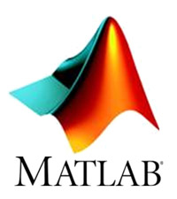

class: center, middle # .title[Velo<span style="color: blue">C</span>ty] <br/><br/> .subtitle[An optimising static compiler for Python and MATLAB] <br /> ###.right[Sameer Jagdale] --- class: center # Scientific Languages <table cellpadding="20"> <tr> <td> <img src="julia.png" alt="Julia"></td> <td> </td> <td> </td> </tr> </table> -- .left[ - Allow easy prototyping. - Have a gentle learning curve. ] -- - .left[However, performance is poor compared to statically compiled.] --- class: center # Solution 1: Rewrite code in C++/Fortran -- <br/> <br/>  -- <br/> .left[ - Declare types and dimensions of arrays. - Memory management. - Increased code size - Steeper learning curve. ] --- class: center #Solution 2: Auto-compilation of whole programs to C++/Fortran .left[ - Many constructs cannot be compiled ahead of time. ``` matlab function time = mainFunction() A = rand(3,3); X = load('dataFile.mat'); Y = Y + 10; time = coreFunction(A,X) end; ``` ] --- class: center #Solution 2: Auto-compilation of whole programs to C++/Fortran .left[ - Many constructs cannot be compiled ahead of time. ``` matlab function time = mainFunction() A = rand(3,3); * X = load('dataFile.mat'); Y = Y + 10; time = coreFunction(A,X) end; ``` How do we determine type and dimensions of X and therefore that of Y? ] --- #Solution 2: Auto-compilation of whole programs to C++/Fortran .left[ - Many constructs cannot be compiled ahead of time. ``` matlab function time = mainFunction() A = rand(3,3); X = load('dataFile.mat'); Y = Y + 10; * time = coreFunction(A,Y) end; ``` If coreFunction is computationally intensive, why not compile only that ? ] --- # Agenda 1. Introduction 2. Execution Model 3. Compilation pipeline 4. Glue code generation 5. Results .hidden[Ulterior motive : Make talk so boring that everyone will be too sleepy to ask questions.] --- # .center[Introduction] <br/> - VeloCty is an optimizing compiler for array-based languages to C++. - Currently supports Matlab and Python's NumPy library. - Implemented using the Velociraptor framework. - Supports parallelism using OpenMP. - Also generates glue code. - Provides language-specific run time library. - About 1.1 to 400 times faster than Mathworks' Matlab. --- # .center[Execution Model]